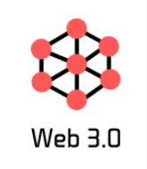

Web 3.0 refers to an intelligent web technology in which a computer can understand the contents of a web page and provide personalized information by using semantic web technology. It is an intelligent, personalized and customized web. Web 3.0 basically goes beyond reading and writing, the core of Web 2.0, and adds the concept of 'ownership'.
The 'World Wide Web' (WWW), as it is known, is a set of static websites containing only simple information without interactive content. Most websites from 1994 to 2004 fall into this category. At this time, users only acted to find the data they wanted in the category. It's very simple, so it's about 50K on average. In the early days of Web 1.0, users could not modify information posted by publishers, and it consisted of simple and static web pages based on HTML. AOL Chat, MSN Messenger, Altavista, and Ask Jeeves were popular at the time of Web 1.0, but the speed was very slow. By the late 1990s, things started to change to a more interactive Internet.
